Retail Technology · 2026
Syntra
An interactive perfume finder for ZARA. Turn a knob and three sliders to find a scent by feeling, step into its world in VR, and take it home on a ticket that comes alive in AR. Interactive case study ↗

Retail Technology · 2026
An interactive perfume finder for ZARA. Turn a knob and three sliders to find a scent by feeling, step into its world in VR, and take it home on a ticket that comes alive in AR. Interactive case study ↗
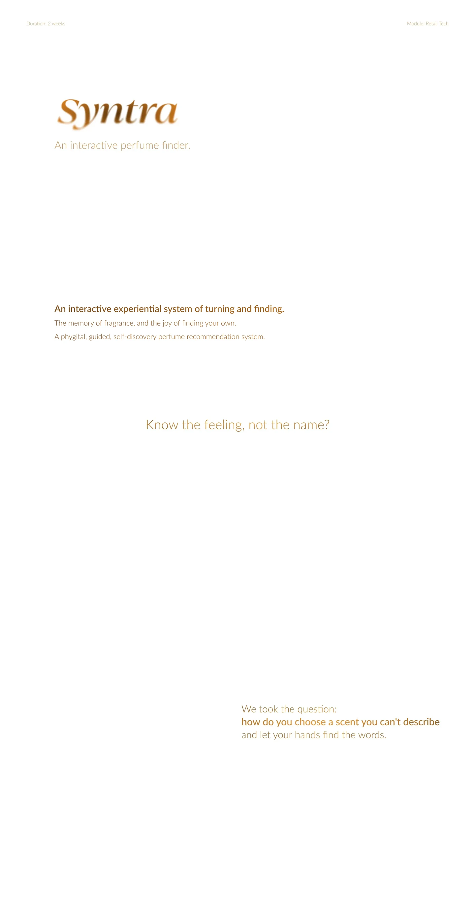
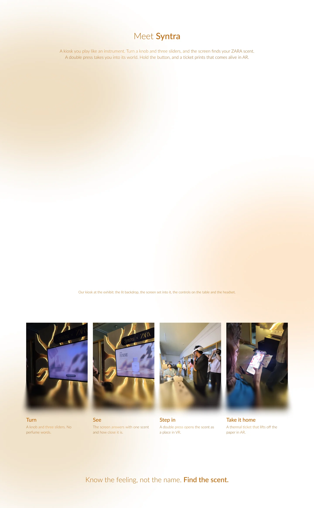
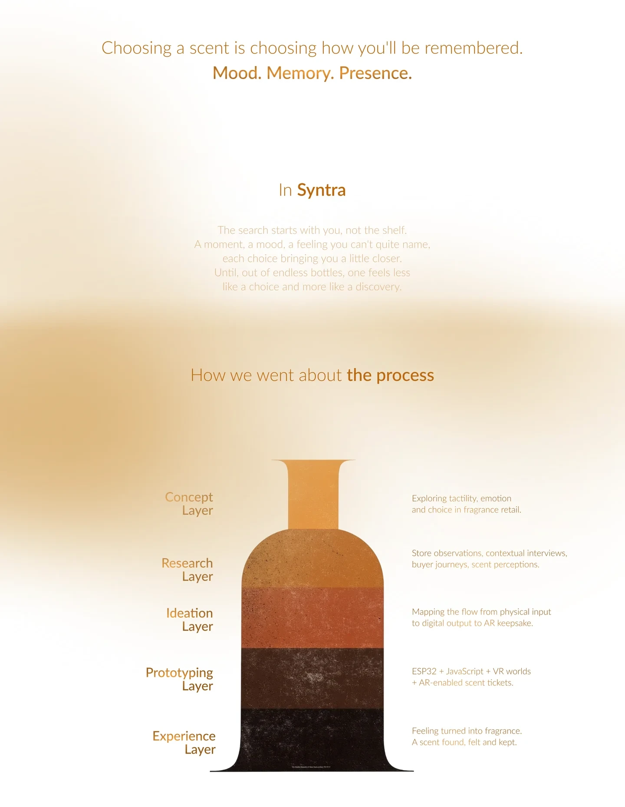
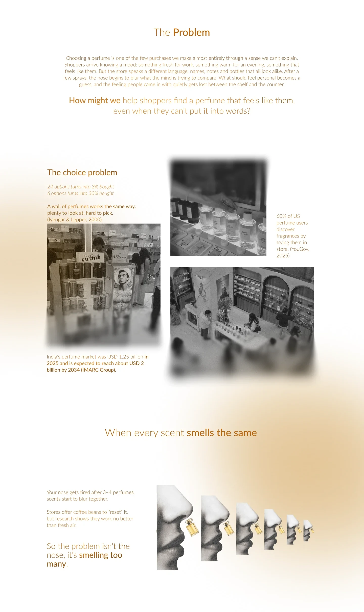
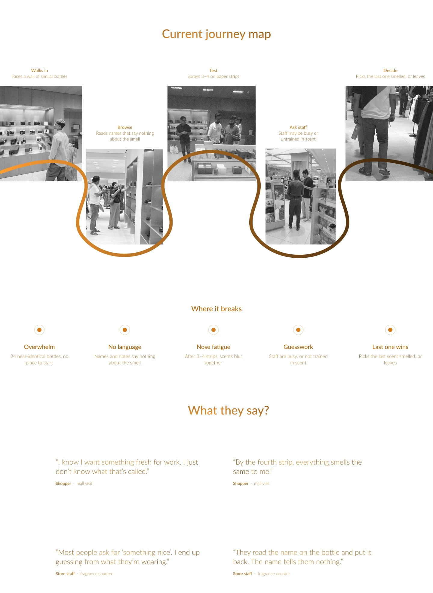
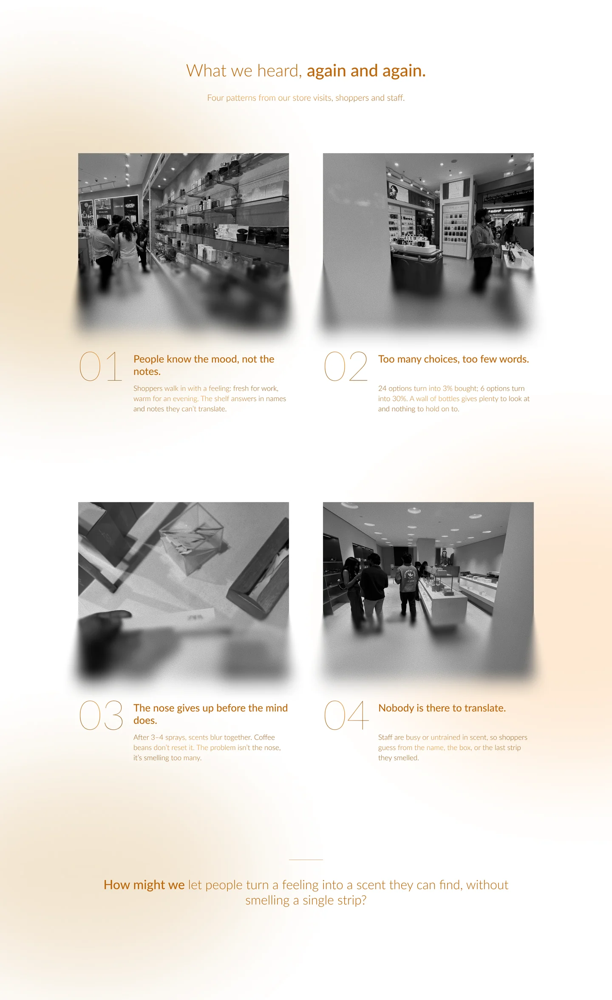
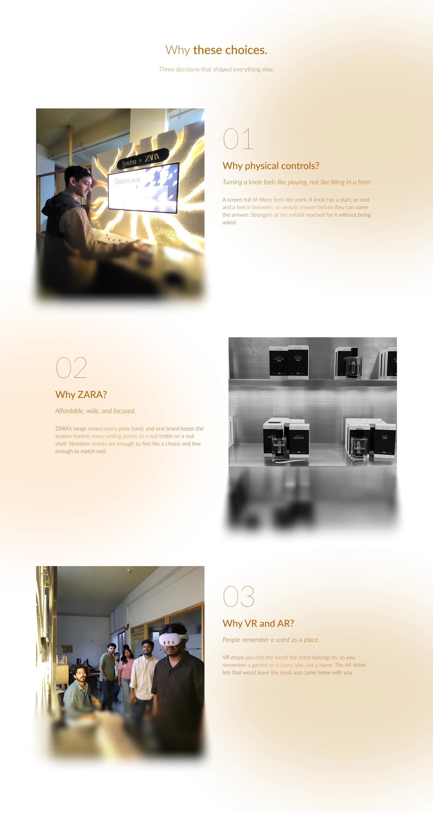
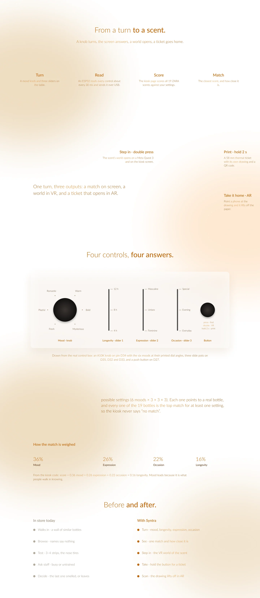
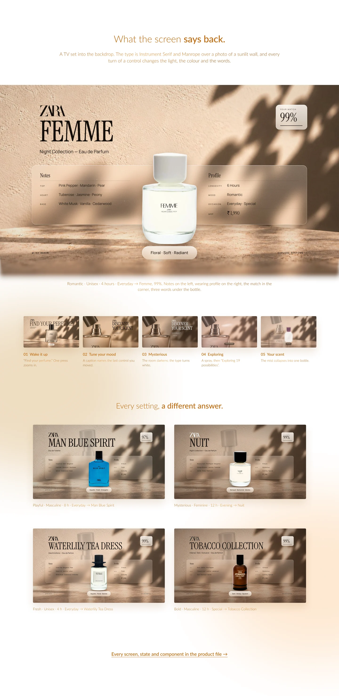
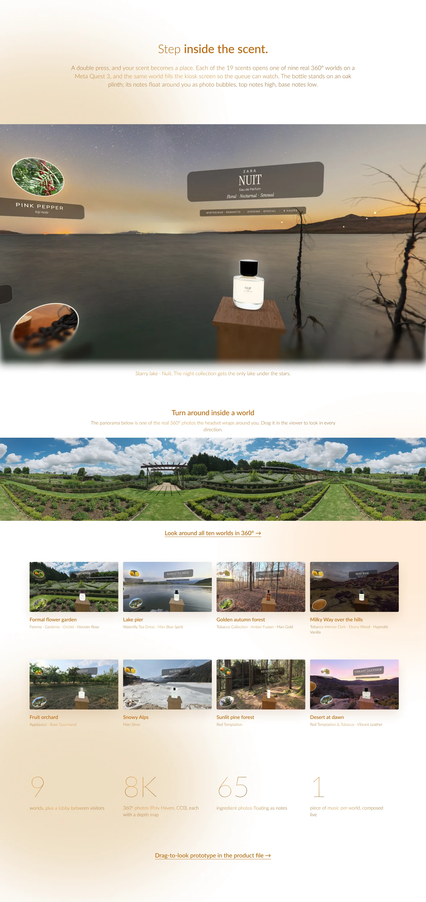
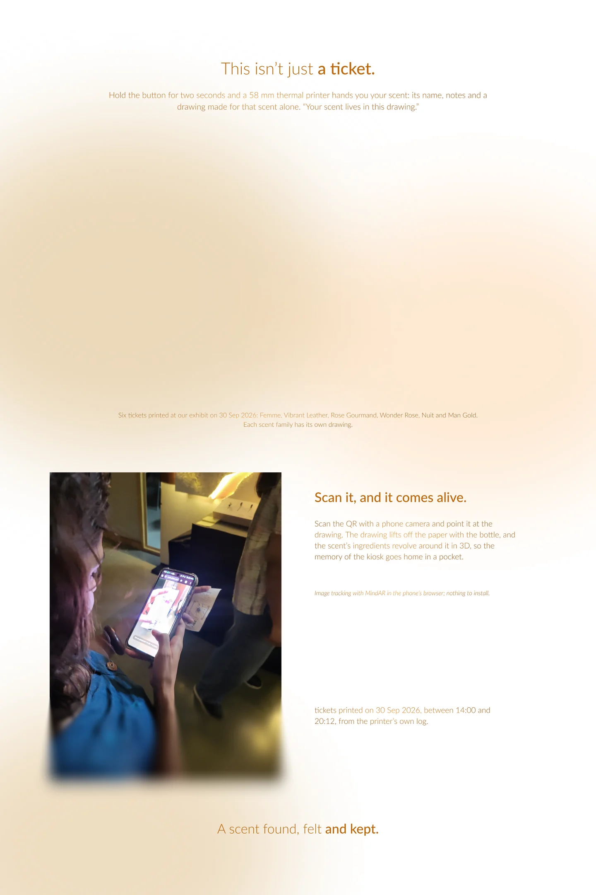
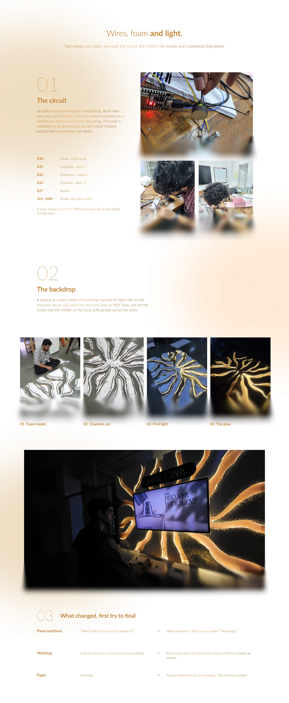
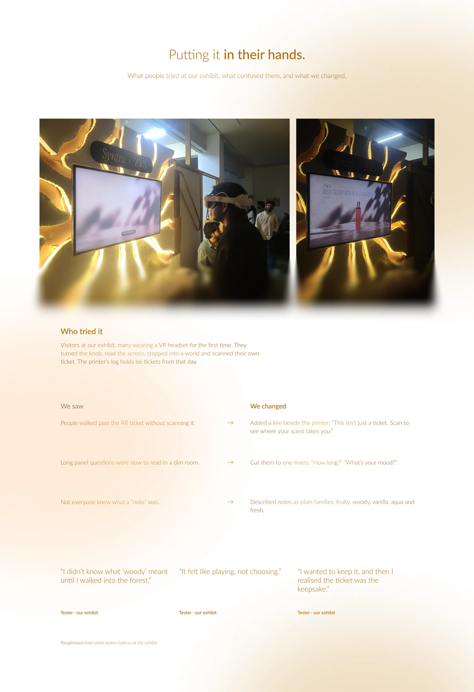
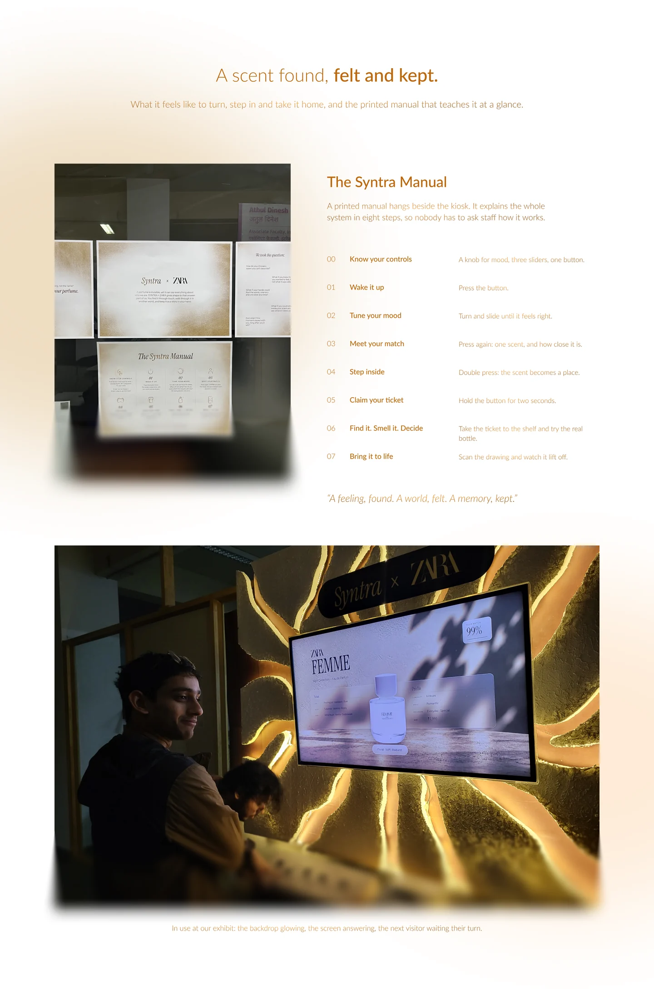
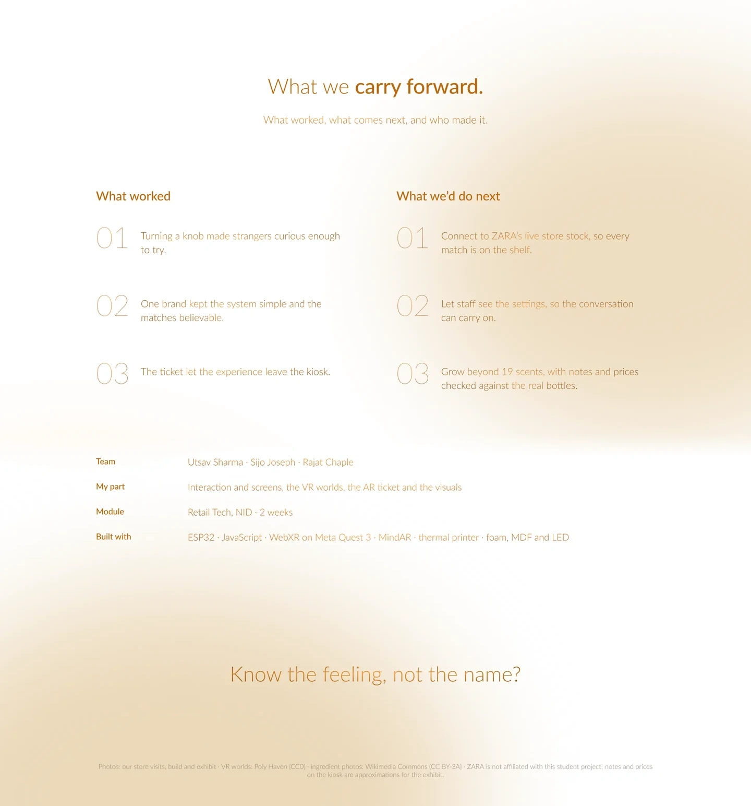